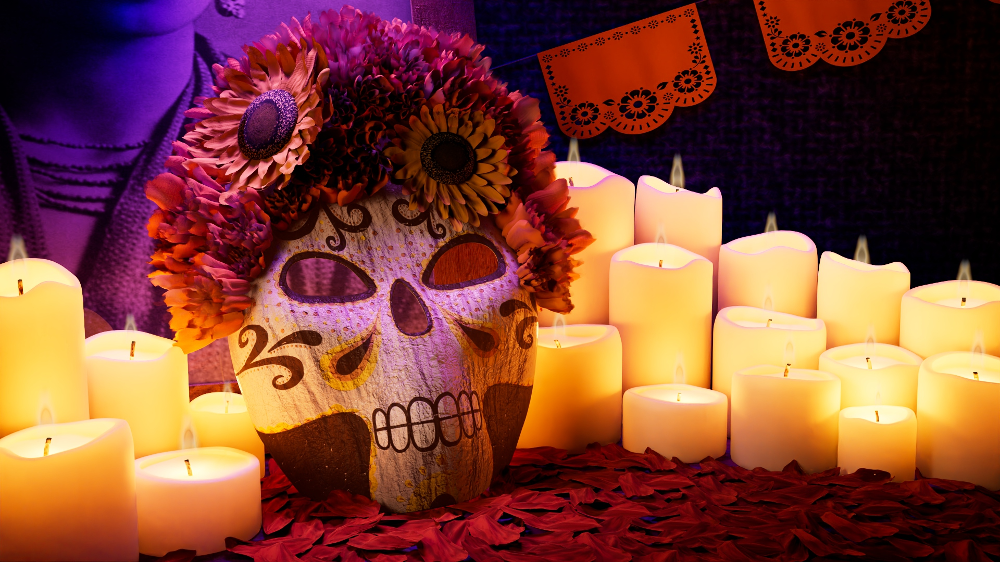

Día de Muertos Ofrenda
A colorful and festive still life of a Día de Muertos ofrenda

Project Breakdown
This was my first full scene where I created everything from the concept to the final render. I really liked the idea of creating a Día de Muertos ofrenda because of the opportunity to play with fun colors, textures, and lighting. I really enjoyed being able to bring my own idea to life and to see it all the way from start to finish!
- Responsible for all aspects
- All assets modeled in Maya
- All assets textured in Adobe Substance 3D Painter
- Candle flame FX created in Maya
- Lit and rendered in Arnold